사회조사분석사-2급 (2019-08-04 기출문제)
1과목: 조사방법론 I
1. 연역적 연구방법과 귀납적 연구방법의 논리체계를 바르게 나열한 것은?
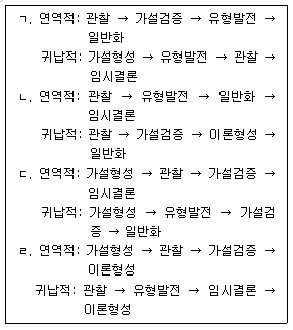
- ㄱ
- ㄴ
- ㄷ
- ㄹ
(정답률: 76%)

2. 실험설계를 위하여 충족되어야 하는 조건과 가장 거리가 먼 것은?
- 독립변수의 조작
- 인과관계의 일반화
- 외생변수의 통제
- 실험대상의 무작위화
(정답률: 70%)
3. 과학적 연구방법의 특징에 관한 설명으로 옳지 않은 것은?
- 간결성 : 최소한의 설명변수만을 사용하여 가능한 최대의 설명력을 얻는다.
- 인과성 : 모든 현상은 자연발생적인 것이어야 한다.
- 일반성 : 경험을 통해 얻은 구체적 사실로 보편적인 원리를 추구한다.
- 경험적 검증가능성 : 이론은 현실세계에서 경험을 통해 검증이 될 수 있어야 한다.
(정답률: 83%)
4. 특정 연구대상이 시간이 지남에 따라 의견이나 태도가 변하는 경우에 사용하는 조사기법으로 연구대상을 구성하는 동일한 단위집단에 대하여 상이한 시점에서 반복하여 조사하는 방법은?
- 패널조사
- 횡단조사
- 인과조사
- 집단조사
(정답률: 79%)
5. 다음 중 2차 자료를 이용하는 조사방법은?
- 현지조사
- 패널조사
- 문헌조사
- 대인면접법
(정답률: 84%)
6. 다음의 특성을 가진 연구방법은?
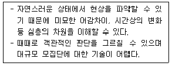
- 참여관찰(participant observation)
- 유사실험(quasi-experiment)
- 내용분석(contents analysis)
- 우편조사(mail survey)
(정답률: 86%)
7. 이메일을 활용한 온라인 조사의 장점과 가장 거리가 먼 것은?
- 신속성
- 저렴한 비용
- 면접원 편향 통제
- 조사 모집단 규정의 명확성
(정답률: 78%)
8. 다음에서 설명하고 있는 실험설계는?
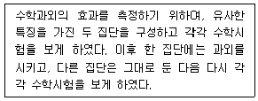
- 집단비교설계
- 솔로몬 4집단설계
- 통제집단 사후측정설계
- 통제집단 사전사후측정설계
(정답률: 64%)
9. 질문지를 이용한 자료 수집 방법의 결정 시 조사 속도가 빠르고 일반적으로 비용이 적게 드는 장점이 있으나 질문의 내용이 어렵고 시간이 길어질수록 응답률이 떨어지는 단점을 가진 자료 수집 방법은?
- 전화조사
- 면접조사
- 집합조사
- 우편조사
(정답률: 73%)
10. 연구문제가 설정된 후, 연구문제를 정의하는 과정을 바르게 나열한 것은?
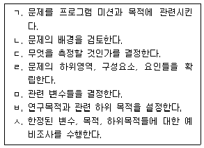
- ㄱ → ㄴ → ㄷ → ㄹ → ㅁ → ㅂ → ㅅ
- ㄱ → ㄴ → ㄹ → ㄷ → ㅁ → ㅂ → ㅅ
- ㄱ → ㄴ → ㅁ → ㄹ → ㅂ → ㄷ → ㅅ
- ㄱ → ㄴ → ㅂ → ㅁ → ㄹ → ㄷ → ㅅ
(정답률: 48%)
11. 다음은 어떤 형태의 조사에 해당하는가?
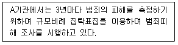
- 사례(case)조사
- 패널(panel)조사
- 추세(trend)조사
- 코호트(cohort)조사
(정답률: 58%)
12. 특정 시점에 다른 특성을 지닌 집단들 사이의 차이를 측정하는 조사방법은?
- 패널(panel)조사
- 추세(trend)조사
- 코호트(cohort)조사
- 서베이(survey)조사
(정답률: 44%)
13. 질문지법에 관한 내용으로 옳지 않은 것은?
- 1차자료 수집방법에 해당한다.
- 간결하고 명료한 문장을 사용해야 한다.
- 추상적인 개념에 대해 조작적 정의가 필요하다.
- 응답자가 조사의 목적을 모르는 상태일 때 사용해야 결과에 신뢰성이 높다.
(정답률: 80%)
14. 독립변수와 종속변수에 대한 설명으로 옳지 않은 것은? (단, 일반적인 경우라 가정한다.)
- 독립변수가 변하면 종속변수에 영향을 미친다.
- 독립변수는 종속변수보다 이론적으로 선행한다.
- 독립변수는 원인변수, 종속변수를 결과변수라고 할 수 있다.
- 종속변수는 독립변수보다 시간적으로 선행한다.
(정답률: 82%)
15. 관찰기법 분류에 관한 설명으로 옳지 않은 것은?
- 응답자에게 자신이 관찰된다는 사실을 알려주고 관찰하는 것은 공개적 관찰이다.
- 관찰할 내용이 미리 명확히 결정되어, 준비된 표준양식에 관찰 사실을 기록하는 것은 체계적 관찰이다.
- 청소년의 인터넷 이용실태를 조사하기 위해 PC방을 방문하여 이용 상황을 옆에서 직접 지켜본다면 직접관찰이다.
- 컴퓨터브랜드 선호도 조사를 위해 판매매장과 비슷한 상황을 만들어 표본으로 선발된 소비자로 하여금 제품을 선택하게 하여 행동을 관찰한다면 자연적 관찰이다.
(정답률: 83%)
16. 양적연구와 비교한 질적연구의 특징이 아닌 것은?
- 비공식적인 언어를 사용한다.
- 주관적 동기의 이해와 의미해석을 하는 현상학적·해석학적 입장이다.
- 비통제적 관찰, 심층적·비구조적 면접을 실시한다.
- 자료분석에 소요되는 시간이 짧아 소규모 분석에 유리하다.
(정답률: 76%)
17. 가설의 평가기준으로 옳지 않은 것은?
- 계량화할 수 있어야 한다.
- 동의반복적(tautological)이어야 한다.
- 동일 연구분야의 다른 가설이나 이론과 연관이 있어야 한다.
- 가설검증결과는 가능한 한 광범위하게 적용할 수 있어야 한다.
(정답률: 77%)
18. 질적연구의 조사도구에 관한 설명으로 옳은 것을 모두 고른 것은?
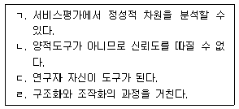
- ㄱ, ㄴ, ㄷ
- ㄱ, ㄷ
- ㄴ, ㄹ
- ㄹ
(정답률: 52%)
19. 집단면접에 의한 설문조사에 대한 설명과 가장 거리가 먼 것은?
- 조사가 간편하여 시간과 비용을 절약할 수 있다.
- 조사조건을 표본화하여 응답조건이 동등해진다.
- 응답자의 통제가 용의하여, 타인의 영향을 배제할 수 있다.
- 응답자들과 동시에 직접 대화할 기회가 있어 질문에 대한 오해를 줄일 수 있다.
(정답률: 65%)
20. 다음의 질문 문항의 문제점은?
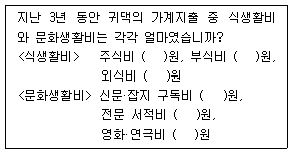
- 대답을 유도하는 질문을 하였다.
- 연구자가 임의로 응답자에 대한 가정을 하였다.
- 응답자에게 지나치게 자세한 응답을 요구했다.
- 응답자가 정확한 대답을 모르는 경우에는 중간값을 선택하는 경향을 간과했다.
(정답률: 72%)
21. 표적집단면접법(focus group interview)에 대한 설명으로 옳지 않은 것은?
- 표본이 특정 집단이기 때문에 조사 결과의 일반화가 어려운 단점이 있다.
- 조사자의 개입이 미비하므로 조사자의 주관이나 편견이 개입되지 않는다.
- 응답자는 응답을 강요당하지 않기 때문에 솔직하고 정확히 자신의 의견을 표명할 수 있다.
- 심층면접법을 응용한 방법으로 조사자가 소수의 응답자를 한 장소에 모이게 한 후 관련된 주제에 대하여 대화와 토론을 통해 정보를 수집하는 방법이다.
(정답률: 68%)
22. 면접조사의 원활한 자료수집을 위해 조사자가 응답자와 인간적인 친밀 관계를 형성하는 것은?
- 라포(rapport)
- 사회화(socialization)
- 조작화(operationalization)
- 개념화(conceptualization)
(정답률: 83%)
23. 다음과 같은 목적에 적합한 조사의 종류는?
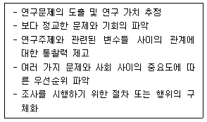
- 탐색조사
- 기술조사
- 종단조사
- 인과조사
(정답률: 70%)
24. 횡단조사(cross-sectional study)에 관한 설명으로 옳은 것은?
- 정해진 연구대상의 특정 변수값을 여러 시점에 걸쳐 연구한다.
- 패널조사에 비하여 인과관계를 더 분명하게 밝힐 수 있다.
- 여러 연구 대상들을 정해진 한 시점에서 조사, 분석하는 방법이다.
- 집단으로 구성된 패널에 대하여 여러 시점에 걸쳐 조사한다.
(정답률: 73%)
25. 경험적 연구를 위한 작업가설의 요건으로 옳지 않은 것은?
- 명료해야 한다.
- 특정화되어 있어야 한다.
- 검정 가능한 것이어야 한다.
- 연구자의 주관이 분명해야 한다.
(정답률: 78%)
26. 과학적 연구조사를 목적에 따라 탐색조사, 기술조사, 인과조사로 분류할 때 기술조사에 해당하는 것은?
- 종단조사
- 문헌조사
- 사례조사
- 전문가의견조사
(정답률: 47%)
27. 다음 상황에서 제대로 된 인과관계 추리를 위해 특히 고려되어야 할 인과관계 요소는?
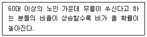
- 공변성
- 시간적 우선성
- 외생 변수의 통제
- 외부 사건의 통제
(정답률: 61%)
28. 과학적 조사방법의 일반적인 과정을 바르게 나열한 것은?
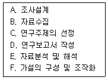
- A → B → C → E → F → D
- A → E → C → B → F → D
- C → F → A → B → E → D
- C → A → F → B → E → D
(정답률: 59%)
29. 우편조사의 응답률에 영향을 미치는 주요요인과 가장 거리가 먼 것은?
- 응답에 대한 동기부여
- 응답자의 지역적 범위
- 질문지의 양식이나 우송방법
- 연구주관기관과 지원단체의 성격
(정답률: 76%)
30. 질문 문항의 배열에 관한 설명으로 옳은 것은?
- 특수한 것을 먼저 묻고 일반적인 것은 나중에 배열한다.
- 개인의 사생활에 대한 것이나 민감한 내용은 먼저 배열한다.
- 시작하는 질문은 흥미를 유발하는 것으로 쉽게 응답할 수 있는 것으로 배열한다.
- 문항이 담고 있는 내용의 범위가 좁은 것에서부터 점차 넓어지도록 배열한다.
(정답률: 81%)
2과목: 조사방법론 II
31. 측정의 타당성(validity)에 대한 설명으로 옳지 않은 것은?
- 동일한 대상의 속성을 반복적으로 측정할 때 동일한 측정결과를 가져올 수 있는 정도를 말한다.
- 측정의 타당성을 평가하는 방법으로는 표면타당성(face validity), 내용타당성(content validity), 개념타당성(construct validity) 등이 있다.
- 일반적으로 측정의 타당성을 경험적으로 검증하는 일은 측정의 신뢰성(reliability)을 검증하는 것보다 어렵다.
- 측정의 타당성을 높이기 위해서는 측정하고자 하는 개념에 대하여 적절한 조작적 정의(operational definition)를 갖는 것이 중요하다.
(정답률: 71%)
32. 다음 중 표본오류의 크기에 영향을 미치는 요인과 가장 거리가 먼 것은?
- 표본의 크기
- 표본추출방법
- 문항의 무응답
- 모집단의 분산 정도
(정답률: 53%)
33. 개념적 정의의 예로 적합하지 않은 것은?
- 무게 → 물체의 중량
- 불안 → 주관화된 공포
- 지능 → 추상적 사고능력 또는 문제해결 능력
- 결혼만족 → 배우자에게 아침을 차려준 횟수
(정답률: 77%)
34. 측정방법에 따라 측정을 구분할 때, 밀도(density)와 같이 어떤 사물이나 사건의 속성을 측정하기 위해 관련된 다른 사물이나 사건의 속성을 측정하는 것은?
- 추론측정
- 임의측정
- 본질측정
- A급 측정
(정답률: 61%)
35. 다음에서 설명하는 신뢰성 측정방법은?
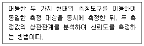
- 반분법(split-half method)
- 재검사법(test-retest method)
- 맥니마 기법(McNemar test)
- 복수양식법(parallel-forms technique)
(정답률: 66%)
36. 다음은 어떤 척도에 관한 설명인가?
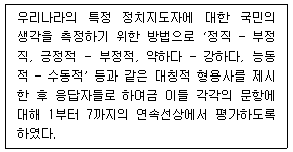
- 서스톤척도
- 거트만척도
- 리커트척도
- 의미분화척도
(정답률: 69%)
37. 인구통계학적, 경제적, 사회·문화·자연 요인 등의 분류기준에 따라 전체 표본을 여러 집단으로 구분하여 집단별로 필요한 대상을 사전에 정해진 크기만큼 추출하는 표본추출방법은?
- 할당표본추출법(quota sampling)
- 편의표본추출법(convenience sampling)
- 층화표본추출법(stratified random sampling)
- 단순무작위표본추출법(simple random sampling)
(정답률: 54%)
38. 측정의 수준에 따라 사용할 수 있는 통계기법이 달라지는데 다음 중 측정의 수준과 사용 가능한 기술통계(descriptive statistics)를 잘못 짝지은 것은?
- 명목 수준 – 중간값(median)
- 서열 수준 – 범위(range)
- 등간 수준 – 최빈값(mode)
- 비율 수준 – 표준편차(standard deviation)
(정답률: 58%)
39. 판단표본추출법(judgement sampling)에 대한 설명으로 옳지 않은 것은?
- 선정된 표본이 모집단을 적절히 대표하지 못할 경우에 효과적이다.
- 모집단에 대한 조사자의 사전지식을 바탕으로 표본을 추출하는 방법이다.
- 모집단이 커질수록 조사자가 표본에 대한 정확한 정보를 얻기 힘들어진다.
- 조사자의 개입의 한계가 있어 주관이 배제되며 결과의 일반화가 용이하다.
(정답률: 68%)
40. 다음 중 비확률표본추출법(non-probability sampling)에 해당하는 것은?
- 할당표본추출법(quota sampling)
- 군집표본추출법(cluster sampling)
- 층화표본추출법(stratified random sapling)
- 단순무작위표본추출법(simple random sampling)
(정답률: 72%)
41. 다음 중 표본 추출과정에서 가장 먼저 해야 할 것은?
- 모집단의 확정
- 표본크기의 결정
- 표집프레임의 선정
- 표본추출방법의 결정
(정답률: 75%)
42. 다음 사례에 해당하는 표본프레임 오류는?
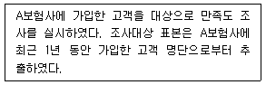
- 모집단과 표본프레임이 동일한 경우
- 모집단이 표본프레임에 포함되는 경우
- 표본프레임이 모집단 내에 포함되는 경우
- 모집단과 표본틀이 전혀 일치하지 않는 경우
(정답률: 58%)
43. 개념을 경험적 수준으로 구체화하는 과정을 바르게 나열한 것은?
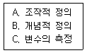
- A → B → C
- B → A → C
- C → A → B
- C → B → A
(정답률: 63%)
44. 대학수능시험 출제를 위해 대학교수들이 출제를 하고 현직 고등학교 교사들이 검토하여 부적절한 문제를 제외하는 절차를 거친다면 이러한 과정은 무엇을 높이기 위한 것인가?
- 집중타당성
- 내용타당성
- 동등형 신뢰도
- 검사-재검사 신뢰도
(정답률: 59%)
45. 다음 ( )에 알맞은 것은?
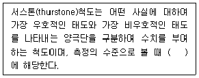
- 명목척도
- 서열척도
- 등간척도
- 비율척도
(정답률: 60%)
46. 척도에 관한 설명으로 옳은 것은?
- 리커트척도는 등간-비율수준의 척도이다.
- 서스톤척도는 모든 문항에 대해 동일한 척도 값을 부여한다.
- 소시오메트리(sociometry)는 집단 간의 심리적 거리를 측정한다.
- 거트만척도에서는 일반적으로 재생계수가 0.9이상이면 적절한 척도로 판단한다.
(정답률: 47%)
47. 다음 중 비율척도로 측정하기 어려운 것은?
- 각 나라의 국방 예산
- 각 나라의 평균 기온
- 각 나라의 일인당 평균 소득
- 각 나라의 일인당 교육 년 수
(정답률: 69%)
48. 군집표본추출법(cluster sampling)에 관한 설명으로 옳지 않은 것은?
- 소집단을 이용하여 표본을 추출하는 방식이다.
- 전체 모집단의 목록이 없는 경우에 매우 유용하다.
- 단순무작위표본추출법에 비해서 시간과 비용 면에서 효율적이다.
- 군집 단계의 수가 많을수록 표본오차(sampling error)가 작아지게 된다.
(정답률: 42%)
49. 표본의 크기를 결정하는 요소와 가장 거리가 먼 것은?
- 연구자의 수
- 모집단의 동일성
- 조사비용의 한도
- 조사가설의 내용
(정답률: 61%)
50. 전국 단위 여론조사를 하기 위해 16개 시도와 20대부터 60대 이상까지의 5개 연령층, 그리고 연령층에 따른 성별로 할당표집을 할 때 표본추출을 위한 할당범주는 몇 개인가?
- 10개
- 32개
- 80개
- 160개
(정답률: 73%)
51. 연구에서 선택된 개념을 실제 현상에서 측정이 가능하도록 관찰 가능한 형태로 표현하는 것은?
- 개념적 정의(conceptual definition)
- 이론적 정의(theoretical definition)
- 조작적 정의(operational definition)
- 구성요소적 정의(constitutive definition)
(정답률: 76%)
52. 표본추출에 관한 설명으로 옳지 않은 것은?
- 전수조사에 비해 표본조사는 비용과 시간이 절약된다.
- 표본은 모집단을 대표하기에는 일정한 오차를 가지고 있다.
- 표본조사에 비해 전수조사는 비표본오차가 발생할 가능성이 낮다.
- 표본추출은 모집단으로부터 조사대상을 선정하는 과정이다.
(정답률: 72%)
53. 사회조사에서 신뢰도가 높은 자료를 얻기 위한 방안과 가장 거리가 먼 것은?
- 면접자들의 면접방식과 태도에 일관성을 유지한다.
- 동일한 개념이나 속성을 측정하기 위한 항목이 없어야 한다.
- 연구자가 임의로 응답자에 대한 가정을 해서는 안 된다.
- 누구나 동일하게 이해하도록 측정항목을 구성한다.
(정답률: 75%)
54. 야구선수의 등번호를 표현하는 측정의 수준은?
- 비율수준의 측정
- 등간수준의 측정
- 서열수준의 측정
- 명목수준의 측정
(정답률: 75%)
55. 두 변수 간의 관계를 보다 정확하고 명료하게 이해할 수 있도록 밝혀주는 역할을 하는 검정변수가 아닌 것은?
- 매개변수(intervening variable)
- 구성변수(component variable)
- 예측변수(predictor variable)
- 선행변수(antecedent variable)
(정답률: 38%)
56. 단순무작위 표본추출에 대한 설명으로 옳지 않은 것은?
- 난수표를 이용하는 표본추출방법이다.
- 모집단을 가장 잘 대표하는 표본추출방법이다.
- 모집단의 모든 조사단위에 표본으로 뽑힐 기회를 동등하게 부여한다.
- 모집단의 구성요소를 정확히 파악하여 명부를 작성하여야 한다.
(정답률: 46%)
57. 어떤 측정수단을 같은 연구자가 두 번 이상 사용하거나, 둘 이상의 서로 다른 연구자들이 사용한다고 할 때, 그 측정수단을 가지고 측정한 결과가 안정되고 일관성이 있는가를 확인하려고 한다면 어떤 것을 고려해야 하는가?
- 신뢰성
- 타당성
- 독립성
- 적합성
(정답률: 72%)
58. 비체계적 오류를 줄이는 방법과 가장 거리가 먼 것은?
- 측정항목의 모호성을 제거한다.
- 측정항목 수를 가능한 한 늘린다.
- 조사대상자가 관심 없는 항목도 측정한다.
- 중요한 질문을 2회 이상 동일한 질문이나 유사한 질문을 한다.
(정답률: 70%)
59. 다음에 나타나는 측정상의 문제점은?
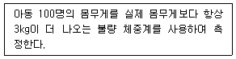
- 타당성이 없다.
- 대표성이 없다.
- 안정성이 없다.
- 일관성이 없다.
(정답률: 76%)
60. 척도의 신뢰도와 타당도의 관계를 표적과 탄착에 비유한 다음 그림에 해당하는 척도의 특성은?
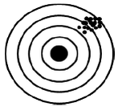
- 타당하나 신뢰할 수 없다.
- 타당하고 신뢰할 수 있다.
- 신뢰할 수 있으나 타당하지 않다.
- 신뢰할 수 없고 타당하지도 않다.
(정답률: 78%)
3과목: 사회통계
61. 피어슨의 대칭도를 대표치들 간의 관계식으로 바르게 나타낸 것은? (단,
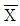
: 산술평균, Me : 중위수, Mo : 최빈수)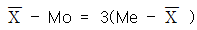
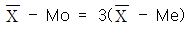
(정답률: 58%)
62. n개의 관측치에 대하여 단순회귀모형 Yiβ0+β1Xi+ϵi을 이용하여 분석하려 한다.
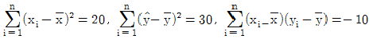
일 때, 회귀계수의 추정치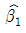
의 값은?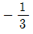
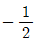
- 2/3
- 3/2
(정답률: 46%)
63. A, B, C 세 공법에 대하여 다음의 자료를 얻었다.
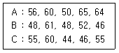
일원분산분석을 통하여 위의 세 가지 공법사이에 유익한 차이가 있는지 검정하고자 할 때, 처리제곱합의 자유도는?
- 1
- 2
- 3
- 4
(정답률: 57%)
64. 국회의원 선거에 출마한 A후보의 지지율이 50%를 넘는지 확인하기 위해 유권자 1000명을 조사하였더니 550명이 A후보를 지지하였다. 귀무가설 H0:p=0.5 대립가설 H1:p>0.5의 검정을 위한 검정통계량 Z0는?
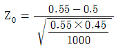
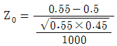
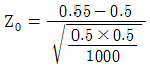
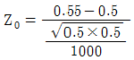
(정답률: 41%)
65. 성별 평균소득에 관한 설문조사자료를 정리한 결과, 집단 내 평균제곱(mean squares within groups)은 50, 집단 간 평균제곱(mean squares between groups)은 25로 나타났다. 이 경우에 F값은?
- 0.5
- 2
- 25
- 75
(정답률: 42%)
66. 회귀분석에서 결정계수R2에 대한 설명으로 틀린 것은?
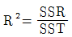
- -1≤R2≤1
- SSE가 작아지면 R2는 커진다.
- R2은 독립변수의 수가 늘어날수록 증가하는 경향이 있다.
(정답률: 51%)
67. 다음은 대응되는 두 변량 X와 Y를 관측하여 얻은 자료 (x1, y1), …, (xn, yn)으로 그린 산점도이다. X와 Y의 표본상관계수의 절댓값이 가장 작은 것은?
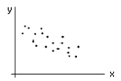
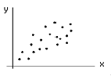
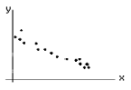
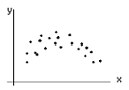
(정답률: 60%)
68. 어느 경제신문사의 조사에 따르면 모든 성인의 30%가 주식투자를 하고 있고, 그 중 대학졸업자는 70%라고 한다. 우리나라 성인의 40%가 대학졸업자라고 가정하고 무작위로 성인 한 사람을 뽑았을 때, 그 사람이 대학은 졸업하였으나 주식투자를 하지 않을 확률은?
- 12%
- 19%
- 21%
- 49%
(정답률: 33%)
69. 10명의 스포츠댄스 회원들이 한 달간 댄스프로그램에 참가하여 프로그램 시작 전 체중과 한 달 후 체중의 차이를 알아보려고 할 때 적합한 검정방법은?
- 대응표본 t-검정
- 독립표본 t-검정
- z-검정
- F-검정
(정답률: 54%)
70. 평균이 μ이고 표준편차가 σ인 모집단에서 임의 추출한 100개의 표본평균  와 1000개의 표본평균
와 1000개의 표본평균  를 이용하여 μ를 측정하고자 한다. 의 두 추정량
를 이용하여 μ를 측정하고자 한다. 의 두 추정량
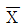
와 중 어느 추정량이 더 좋은 추정량인지를 올바르게 설명한 것은?
중 어느 추정량이 더 좋은 추정량인지를 올바르게 설명한 것은? 의 표준오차가 더 크므로
의 표준오차가 더 크므로  가 더 좋은 추정량이다.
가 더 좋은 추정량이다. 의 표준오차가 더 작으므로
의 표준오차가 더 작으므로  가 더 좋은 추정량이다.
가 더 좋은 추정량이다.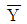
의 표준오차가 더 크므로 가 더 좋은 추정량이다.
가 더 좋은 추정량이다. 의 표준오차가 더 작으므로
의 표준오차가 더 작으므로  가 더 좋은 추정량이다.
가 더 좋은 추정량이다.
(정답률: 62%)
71. 회귀분석에 대한 설명 중 옳은 것은?
- 회귀분석에서 분산분석표는 사용되지 않는다.
- 독립변수는 양적인 관찰 값만 허용된다.
- 회귀분석은 독립변수 간에는 상관관계가 0인 경우만 분석 가능하다.
- 회귀분석에서 t-검정과 F-검정이 모두 사용된다.
(정답률: 48%)
72. 모집단의 표준편차의 값이 상대적으로 작을 때에 표본평균 값의 대표성에 대한 해석으로 가장 적합한 것은?
- 대표성이 크다.
- 대표성이 적다.
- 표본의 크기에 따라 달라진다.
- 대표성의 정도는 표준편차와 관계없다.
(정답률: 49%)
73. 회귀분석에서 추정량의 성질이 아닌 것은?(오류 신고가 접수된 문제입니다. 반드시 정답과 해설을 확인하시기 바랍니다.)
- 선형성
- 불편성
- 등분산성
- 유효성
(정답률: 26%)
74. 6면 주사위의 각 눈이 나타날 확률이 동일한지를 알아보기 위하여 주사위를 60번 던진 결과가 다음과 같다. 다음 설명 중 틀린 것은?
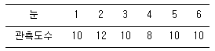
- 카이제곱 동질성검정을 이용한다.
- 카이제곱 검정통계량 값은 0.8이다.
- 귀무가설은 “각 눈이 나올 확률은 1/6이다.”이다.
- 귀무가설 하에서 각 눈이 나올 기대도수는 10이다.
(정답률: 34%)
75. 어떤 산업제약의 제품 중 10%는 유통과정에서 변질되어 불량품이 발생한다고 한다. 이를 확인하기 위하여 해당 제품 100개를 추출하여 실험하였다. 이때 10개 이상이 불량품일 확률은?
- 0.1
- 0.3
- 0.5
- 0.7
(정답률: 33%)
76. 어떤 도시의 특정 정당 지지율을 추정하고자 한다. 지지율에 대한 90% 추정오차한계를 5% 이내가 되도록 하기 위한 최소 표본의 크기는? (단, Z가 표준정규분포를 따르는 확률변수일 때 P(Z≤1.645)=0.95, P(Z≤1.96)=0.975, P(Z≤0.995)=2.576이다.)
- 68
- 271
- 385
- 664
(정답률: 43%)
77. 행변수가 M개의 범주를 갖고 열변수가 N개의 범주를 갖는 분할표에서 행변수와 열변수가 서로 독립인지를 검정하고자 한다. (i, j)셀의 관측도수를 Oij, 귀무가설 하에서의 기대도수의 추정치를
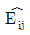
라 할 때, 이 검정을 위한 검정통계량은?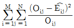
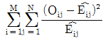
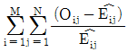
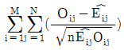
(정답률: 61%)
78. 공정한 동전 두 개를 던지는 시행을 1200회하여 두 개 모두 뒷면이 나온 횟수를 X라고 할 때, P(285≤X≤315)의 값은? (단, Z~N(0, 1)일 때, P(Z<1)=0.84)
- 0.35
- 0.68
- 0.95
- 0.99
(정답률: 50%)
79. 다른 변수들의 상관관계를 통제하고 순수하게 두 변수간의 상관관계를 나타내는 것은?
- 단순상관계수
- 편상관계수
- 다중상관계수
- 결정계수
(정답률: 22%)
80. 특정 제품의 단위 면적당 결점의 수 또는 단위 시간당 사건 발생수에 대한 확률분포로 적합한 분포는?
- 이항분포
- 포아송분포
- 초기하분포
- 지수분포
(정답률: 63%)
81. 가설검정에 대한 설명으로 틀린 것은?
- 가설은 귀무가설과 대립가설이 있다.
- 귀무가설은 주로 기존의 사실을 위주로 보수적으로 세운다.
- 가설검정의 과정에서 유의수준은 유의확률(p-value)을 계산 후에 설정한다.
- 유의확률(p-value)이 유의수준보다 작으면 귀무가설을 기각한다.
(정답률: 52%)
82. 다음은 경영학과, 컴퓨터정보학과에서 15점 만점인 중간고사 결과이다. 두 학과 평균의 차이에 대한 95% 신뢰구간은?(오류 신고가 접수된 문제입니다. 반드시 정답과 해설을 확인하시기 바랍니다.)
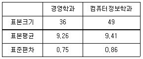
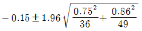
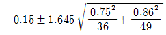
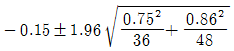
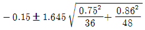
(정답률: 55%)
83. 분산에 관한 설명으로 틀린 것은?
- 편차제곱의 평균이다.
- 분산은 양수 또는 음수를 취한다.
- 자료가 모두 동일한 값이면 분산은 0이다.
- 자료가 평균에 밀집할수록 분산의 값은 작아진다.
(정답률: 64%)
84. 눈의 수가 3이 나타날 때까지 계속해서 공정한 주사위를 던지는 실험에서 주사위를 던진 횟수를 확률변수 X라고 할 때, X의 기댓값은?
- 3.5
- 5
- 5.5
- 6
(정답률: 36%)
85. 어느 고등학교 1학년 학생의 신장은 평균이 168cm이고, 표준편차가 6cm인 정규분포를 따른다고 한다. 이 고등학교 1학년 학생 100명을 임의 추출할 때, 표본평균이 167cm이상 169cm 이하인 확률은? (단, P(Z≤1.67)=0.9525)
- 0.9⑤0
- 0.0475
- 0.8⑤0
- 0.7⑤0
(정답률: 52%)
86. 항아리 속에 흰 구슬 2개, 붉은 구슬 3개, 검은 구술 5개가 들어 있다. 이 항아리에서 임의로 구슬 3개를 꺼낼 때, 흰 구슬 2개와 검은 구슬 1개가 나올 확률은?
- 1/24
- 9/40
- 3/10
- 1/5
(정답률: 50%)
87. 3개의 처리(treatment)를 각각 5번씩 반복하여 실험하였고, 이에 대해 분산분석을 실시하고자 할 때의 설명으로 틀린 것은?
- 분산분석표에서 오차의 자유도는 12이다.
- 분산분석의 영가설(H0)은 3개의 처리 간 분산이 모두 동일하다고 설정한다.
- 유의수준 0.⑤하에서 계산된 F-비 값은 F(0.⑤,2,12) 분포값과 비교하여, 영가설의 기각여부를 결정한다.
- 처리 평균제곱은 처리 제곱합을 처리 자유도로 나눈 것을 말한다.
(정답률: 28%)
88. 단순회귀분석의 적합도 추정에 대한 설명으로 틀린 것은?
- 결정계수가 1이면 상관계수는 반드시 1이다.
- 결정계수는 오차의 변동 대비 회귀의 변동을 비율로 나타낸 값이다.
- 추정의 표준오차는 잔차에 의한 식으로 계산된다.
- 모형의 F-검정이 유의하면 기울기의 유의성 검정도 항상 유의하다.
(정답률: 20%)
89. 평균이 μ이고, 표준편차가 σ인 정규모집단으로부터 표본을 관측할 때, 관측값이 μ+2σ와 μ-2σ 사이에 존재할 확률은 약 몇 %인가?
- 33%
- 68%
- 95%
- 99%
(정답률: 57%)
90. A반 학생은 50명이고 B반 학생은 100명이다. A반과 B반의 평균성적이 각각 80점과 85점이었다. A반과 B반의 전체 평균성적은?
- 80.0
- 82.5
- 83.3
- 83.5
(정답률: 62%)
91. 독립변수가 2(=k)개인 중회귀모형 yj=β0+β1x1j+β2x2j+ϵj, j=1, ∙∙∙, n의 유의성 검정에 대한 내용으로 틀린 것은?(오류 신고가 접수된 문제입니다. 반드시 정답과 해설을 확인하시기 바랍니다.)
- H0:β1=β2=0
- H1: 회귀계수 β1, β2중 적어도 하나는 0이 아니다.
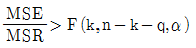
이면 H0를 기각한다.- 유의확률 p가 유의수준 α보다 작으면 H0을 기각한다.
(정답률: 50%)
92. 두 집단의 분산의 동일성 검정에 사용되는 검정통계량의 분포는?
- t-분포
- 기하분포
- X2-분포
- F-분포
(정답률: 40%)
93. 다음 중 산포의 측도는?
- 평균
- 범위
- 중앙값
- 제75백분위수
(정답률: 51%)
94. 동전을 3회 던지는 실험에서 앞면이 나오는 횟수를 X라고 할 때, 확률변수 Y=(X-1)2의 기댓값은?
- 1/2
- 1
- 3/2
- 2
(정답률: 31%)
95. 대기오염에 따른 신체발육정도가 서로 다른지를 알아보기 위해 대기오염상태가 서로 다른 4개 도시에서 각각 10명씩 어린이들의 키를 조사하였다. 분산분석의 결과가 다음과 같을 때, 다음 중 틀린 것은?
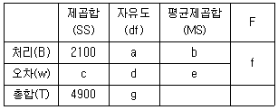
- b = 700
- c = 2800
- g = 39
- f = 8.0
(정답률: 49%)
96. 다음은 가전제품 서비스센터에서 어느 특정한 날 하루 동안 신청 받은 애프터서비스 건수이다. 자료에 대한 설명으로 틀린 것은?
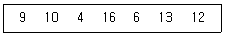
- 왜도는 0이다.
- 범위는 12이다.
- 편차들의 총합은 0이다.
- 평균과 중앙값은 10으로 동일하다.
(정답률: 55%)
97. 카이제곱검정에 의해 성별과 지지하는 정당 사이에 관계가 있는지를 알아보기 위해 자료를 조사한 결과, 남자 200명 중 A정당 지지자가 140명, B정당 지지자가 60명, 여자 200명 중 A정당 지지자가 80명, B정당 지지자는 120명이다. 성별과 정당 사이에 관계가 없을 경우 남자와 여자 각각 몇 명이 B정당을 지지한다고 기대할 수 있는가?
- 남자 : 50명, 여자 : 50명
- 남자 : 60명, 여자 : 60명
- 남자 : 80명, 여자 : 80명
- 남자 : 90명, 여자 : 90명
(정답률: 38%)
98. 모평균 θ에 대한 95% 신뢰구간이 (-0.042, 0.522)일 때, 귀무가설 H0:θ=0과 대립가설 H1:0≠0을 유의수준 0.⑤에서 검정한 결과에 대한 설명으로 옳은 것은?
- 신뢰구간이 0을 포함하고 있으므로 귀무가설을 기각할 수 없다.
- 신뢰구간과 가설검정은 무관하기 때문에 신뢰구간을 기초로 검증에 대한 어떠한 결론도 내릴 수 없다.
- 신뢰구간을 계산할 때 표준정규분포의 임계값을 사용했는지 또는 t분포의 임계값을 사용했는지에 따라 해석이 다르다.
- 신뢰구간의 상한이 ⑤22로 0보다 크므로 귀무가설을 기각한다.
(정답률: 43%)
99. 검정통계량의 분포가 정규분포가 아닌 검정은?
- 대표본에서 모평균의 검정
- 대표본에서 두 모비율의 차에 관한 검정
- 모집단이 정규분포인 대표본에서 모분산의 검정
- 모집단이 정규분포인 소표본에서 모분산을 알 때, 모평균의 검정
(정답률: 34%)
100. 정규모집단 N(μ,σ2)에서 추출한 확률표본 X1,X2,...Xn의 표본분산 에 대한 설명으로 옳은 것은?
- S2은 σ2의 불편추정량이다.
- S는 σ의 불편추정량이다
- S2은 카이제곱분포를 따른다.
- S2의 기댓값은 σ2/n이다.
(정답률: 32%)